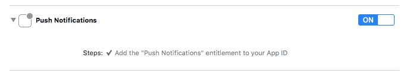

Depending on how you use the Neerby SDK, some steps are mandatory, some are optional.
- Base integration for counting visits
- Do not ask for CoreLocation permissions
- Recording user data
- Beacon-based notifications
- Application tagging
- Push notifications
Base integration
The base integration requires the following steps.
- In your Info.plist file add a
Neer.By AppIDkey containg the Application ID provied by Ezeeworld
Warning: if this key is present with a valid application identifier, the SDK will init automatically upon app launch. It will register the device with the Neer.by server (but won't search for beacons, or display notifications, or send geolocalized information to our server). If you want to fully control when the device will be registered to our back-end, add a Neer.By Disable automatic init key to your Info.plist, with a Boolean type and a YES value.
<key>Neer.By Disable automatic init</key>
<true/>
Warning: if you are setting Neer.By Disable automatic init to YES you must manually initialise the singleton:
[B4SSingleton setupSharedInstance];
B4SSingleton.setupSharedInstance())
- Import the Framework In your AppDelegate.m
@import BeaconForStoreSDK;
@import BeaconForStoreSDK
- Start the SDK in the application:didFinishLaunchingWithOptions: method:
[[B4SSingleton sharedInstance] start];
B4SSingleton.sharedInstance().start()
Do not ask for Notifications permissions
By default, on startup, the SDK will ask the user for his permission to display notifications if it hasn't been done already. You can disable this behavior if you want to ask the user his permission to display notifications within your own onboarding process.
To do so, add a Neer.By Do not ask for notification permission to your Info.plist with a YES value.
Warning: if this key is set to YES, the SDK won't be able to display notifications until the applications asks the user to do so.
Do not ask for CoreLocation permissions
By default, on startup, the SDK will ask the user for his permission to access his geolocation if it hasn't been done already. You can disable this behavior if you want to ask the user his location within your own onboarding process.
To do so, add a Neer.By Do not ask for geolocation permission to your Info.plist with a YES value.
Warning: if this key is set to YES, the SDK won't have access to the user location until the user agrees the share his location. Thus the SDK won't track the user position and won't be able to listen to Beacons.
Recording user data
Neerby can relate events tot individual customers. Supplying the customer details is typically done on startup and/or after a user signed in to his/her account. In these cases you can update te SDK with this customer data (which is persisted; no need to call this every time). The key should use reverse-dns-like notation to be used as a domain. For instance, the user hometown should use a "user.hometown" key.
Starting with version 2.4.0 an option is available to restrict the user property to the device. If the key is set to FALSE the value will be sent to the server and available to create customer targets. If set to TRUE the value is kept on the device and can only be user to replace placeholder in notification messages.
[[B4SSingleton sharedInstance] setUserProperty:kB4SUserPropertyUserFirstNameKey withString:@"Bernard" andLocalOnly:FALSE];
[[B4SSingleton sharedInstance] setUserProperty:kB4SUserPropertyUserLastNameKey withString:@"VanCode" andLocalOnly:FALSE];
[[B4SSingleton sharedInstance] setUserProperty:kB4SUserPropertyUserGenderKey withGender:B4SCustomerGender_MALE andLocalOnly:FALSE];
[[B4SSingleton sharedInstance] setUserProperty:kB4SUserPropertyUsereMailKey withString:@"bernard@vancode.com" andLocalOnly:FALSE];
[[B4SSingleton sharedInstance] setUserProperty:kB4SUserPropertyUserCustomerRefNameKey withString:@"90210" andLocalOnly:FALSE];
B4SSingleton.sharedInstance().setUserProperty(kB4SUserPropertyUserFirstNameKey, withString: "Bernard", andLocalOnly:false)
B4SSingleton.sharedInstance().setUserProperty(kB4SUserPropertyUserLastNameKey, withString: "VanCode", andLocalOnly:false)
B4SSingleton.sharedInstance().setUserProperty(kB4SUserPropertyUserGenderKey, withGender: B4SCustomerGender_MALE, andLocalOnly:false)
B4SSingleton.sharedInstance().setUserProperty(kB4SUserPropertyUsereMailKey, withString: "bernard@vancode.com", andLocalOnly:false)
B4SSingleton.sharedInstance().setUserProperty(kB4SUserPropertyUserCustomerRefNameKey, withString: "90210", andLocalOnly:false)
Beacon-based notifications
The Neerby SDK uses local notifications to establish communication between beacons and the app.
Implement the application:didReceiveLocalNotification: method in your appDelegate. A notification will be sent by the SDK when a notification is fired. You can use the UILocalNotification.userInfo to process the notification yourself. But if you set up some automatic action in the B4S Manager application or using the web app, you must call the [B4SSingleton notificationFeedback:] method. So, the SDK will display a confirmation panel (if any) and process one of the requested predefined actions.
- (void)application:(UIApplication *)application didReceiveLocalNotification:(UILocalNotification *)notification
{
[[B4SSingleton sharedInstance] notificationFeedback:notification.userInfo];
}
func application(application: UIApplication, didReceiveLocalNotification notification: UILocalNotification) {
B4SSingleton.sharedInstance().notificationFeedback(notification.userInfo)
}
After processing a notification, a kB4SNotificationProcessedNotification event is fired by the SDK. The notification type is a B4SActionType that you can get using [[notificationData.userInfo objectForKey:kB4SNotifActionId] intValue]
Application tagging
You can tag your application with the B4S SDK. You can set two values : The first parameter is the event descriptor and the second the userData asociated to the event. Use the [B4STag event:userData:] and [B4STag event:userData:] methods
Starting with 2.5.2, the old B4STag API is now deprecated. It is replaced with NeerbyTag which is GDPR compliant.
You can tag your application with the B4S SDK. You have to specify 2 informations : • A tag type • A data dictionnary with the datas associated to your tag. This new API will automaticaly add the following informations to each of your tags : • Device location • SDK version number • Application version number • Tag timestamp
NSDictionary *tags = @{
@"tagName": @"tagValue",
};
[NeerByTag newEvent:@"sdk.sampleTag" data:tags];
Custom notifications
You can customize the notification messages and data sent to your application
- Implement B4SDelegate in your app delegate
@interface AppDelegate : UIResponder <UIApplicationDelegate,B4SDelegate>
class AppDelegate: UIResponder, UIApplicationDelegate, B4SDelegate {
- In your application:didFinishLaunchingWithOptions: method: set the singleton delegate to your app delegate after calling [B4SSingleton setupSharedInstanceWithAppId:]
[B4SSingleton sharedInstance].delegate = self;
B4SSingleton.sharedInstance().delegate = self
- Implement the [B4SDelegate customizeNotificationText:andData:andUserInfo:completion:] in your app delegate
- (void)customizeNotificationText:(NSString *)aText
andData:(NSString *)aData
andUserInfo:(NSMutableDictionary *)userInfos
completion:(void (^)(NSString *pushText, NSString *pushData, NSMutableDictionary *userInfos))completion {
if (completion) {
NSLog(@"[customizeNotificationText] surround notification text with braces");
completion([NSString stringWithFormat:@"[%@]",aText], aData, userInfos);
}
}
func customizeNotificationText(aText: String!, andData aData: String!, andUserInfo userInfos: NSMutableDictionary!, completion: ((String!, String!, NSMutableDictionary!) -> Void)!) {
if completion {
print("customizeNotificationText: surround notification text with braces")
completion("[\(aText)]", aData, userInfos)
}
Custom notifications using placeholders
You can automatically customise some items displayed within notifications : * Notification title * Notification text * URLs used for deeplink or rich pushes.
This can be achieved by inserting predefined placeholders in the corresponding items. Theses placeholders are :
-
This placeholder will be replaced with the name of the beacon which triggered the notification. -
This placeholder will be replaced with the reference code you eventually assigned to the beacon which triggered the notification. -
This placeholder will be replaced with the name of the shop associated to the notification (shop the beacon belongs to or location name of the virtual beacon) -
This placeholder will be replaced with the reference code of the shop associated to the notification (shop the beacon belongs to or location name of the virtual beacon) -
This placeholder will be replaced with the city name of the shop associated to the notification (shop the beacon belongs to or location name of the virtual beacon) -
This placeholder will be replaced with the zip code of the shop associated to the notification (shop the beacon belongs to or location name of the virtual beacon) -
This placeholder will be replaced with the value of the kB4SUserPropertyUserLastNameKey UserProperty you should have previously set with the following code.
[[B4SSingleton sharedInstance] setUserProperty:kB4SUserPropertyUserLastNameKey withString:@"VanCode"];
B4SSingleton.sharedInstance().setUserProperty(kB4SUserPropertyUserLastNameKey, withString: "VanCode")
This placeholder will be replaced with the value of the kB4SUserPropertyUserFirstNameKey UserProperty you should have previously set with the following code.
[[B4SSingleton sharedInstance] setUserProperty:kB4SUserPropertyUserFirstNameKey withString:@"Bernard"];
B4SSingleton.sharedInstance().setUserProperty(kB4SUserPropertyUserFirstNameKey, withString: "Bernard")
This placeholder will be replaced with the value of the USER_CLIENT_REF UserProperty you should have previously set with the following code.
[[B4SSingleton sharedInstance] setUserProperty:kB4SUserPropertyUserCustomerRefNameKey withString:@"90210"];
B4SSingleton.sharedInstance().setUserProperty(kB4SUserPropertyUserCustomerRefNameKey, withString: "90210")
This placeholder will be replaced with the timestamp (in seconds ) of the notification generation.
Custom alert sound
- Change the sound played when you app shows a notification to the user. The sound file must be in .caf (Core Audio File) format and imported into your project
[[B4SSingleton sharedInstance] setNotificationSoundname:@"sound.caf"];
B4SSingleton.sharedInstance().notificationSoundname = "sound.caf"
Push notifications
To use remote push notifications you must first follow the instructions of the "Base integration" and "Beacon-based notifications" sections
Certificates
- Follow Apple Developer documentation on how to get Certificates for push notifications
Target configuration
- Select your application target
- Select the "Capabilities" tab
- Set Push Notifications to "On" 
- In Background Modes enable "Remotes Notifications" in addition to "Background Fetch"

Code
- After initializing the SDK with the setupSharedInstanceWithAppId: call enablePushNotifications:
[[B4SSingleton sharedInstance] enablePushNotifications];
B4SSingleton.sharedInstance().enablePushNotifications()
- Implement application:didRegisterForRemoteNotificationsWithDeviceToken: in your app delegate:
- (void)application:(UIApplication *)application didRegisterForRemoteNotificationsWithDeviceToken:(NSData *)deviceToken
{
[[B4SSingleton sharedInstance] registerPushNotificationDeviceToken:deviceToken];
}
// Swift 4
func application(_ application: UIApplication, didRegisterForRemoteNotificationsWithDeviceToken deviceToken: Data)
{
B4SSingleton.sharedInstance().registerPushNotificationDeviceToken(deviceToken)
}
// Swift 3
func application(application: UIApplication, didRegisterForRemoteNotificationsWithDeviceToken deviceToken: NSData)
{
B4SSingleton.sharedInstance().registerPushNotificationDeviceToken(deviceToken)
}
- Implement application:didReceiveRemoteNotification: in your app delegate:
- (void)application:(UIApplication *)application didReceiveRemoteNotification:(NSDictionary *)userInfo
{
[B4SSingleton sharedInstance] notificationFeedback:userInfo];
}
func application( application: UIApplication, didReceiveRemoteNotification userInfo: [NSObject : AnyObject])
{
B4SSingleton.sharedInstance().notificationFeedback(userInfo)
}
Using a transient device UUID
Warning: using this feature is not recommended
Upon the app installation, an anymous device UUID is generated and stored in the Keychain to be read back if the app is un-installed then re-installed. To make this ID transient add a Neer.By Use transient DeviceID key to your Info.plist, with a String type and a value of YES
<key>Neer.By Use transient DeviceID</key>
<string>YES</string>
Getting the user's workplace and home coordinates
The SDK tries to determinate the user's home & workplace coordinate. When accessing those, you must check if the coordinates are valid using the CLLocationCoordinate2DIsValid() method
CLLocationCoordinate2D home = [[B4SSingleton sharedInstance] userWorkplaceCoordinates];
if (CLLocationCoordinate2DIsValid(home))
{
// Use the coordinates
}
let home = B4SSingleton.sharedInstance().userWorkplaceCoordinates
if (CLLocationCoordinate2DIsValid(home))
{
// Use the coordinates
}